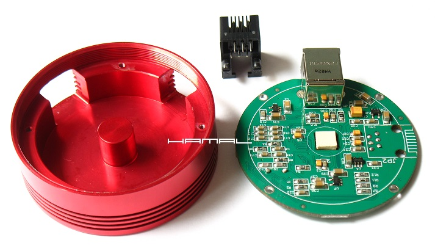
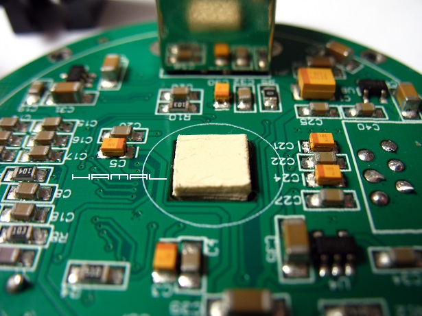
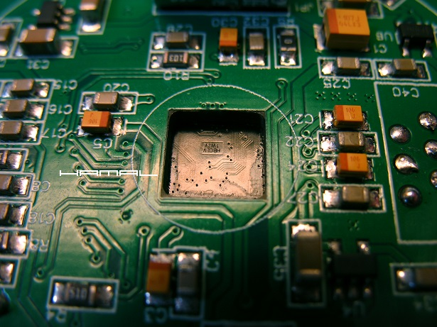
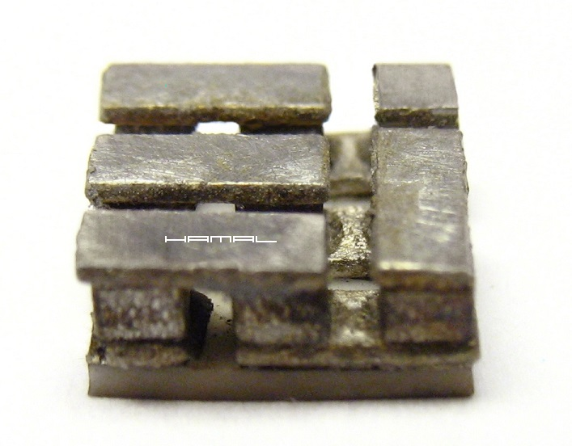
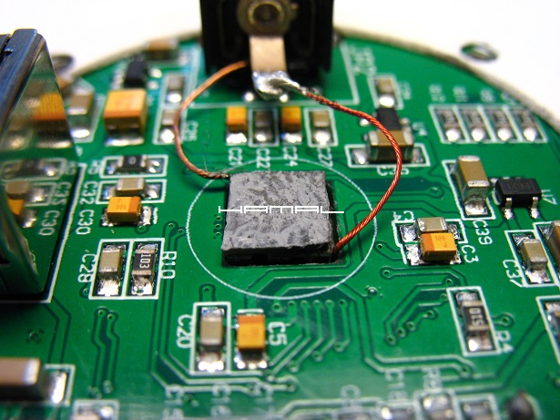
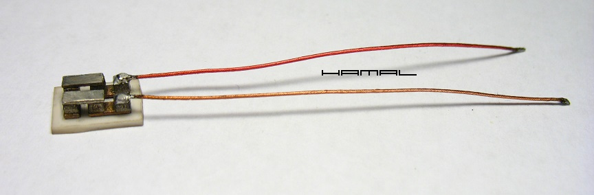
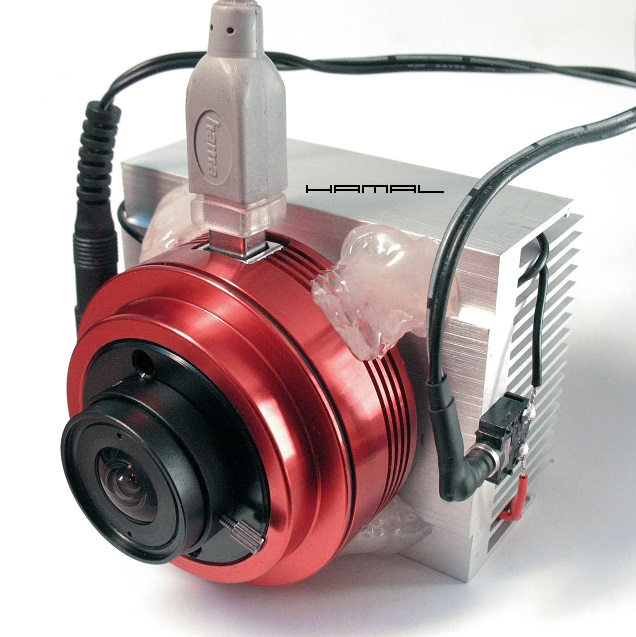
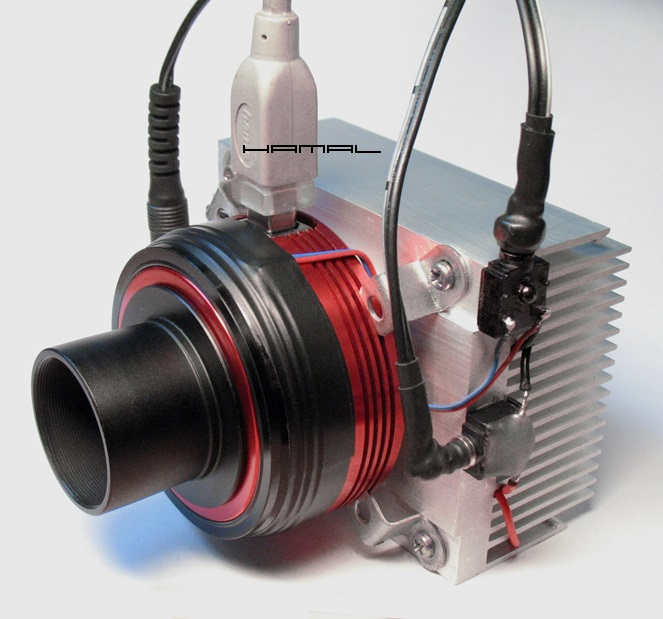

.
MODYFIKACJE
|
ZWO ASI 120 MM jest bardzo ciekawą kamerą, mogącą znaleźć zastosowanie w astrofotografii, jednak jej podstawową wadą jest brak chłodzenia matrycy i głównie o tym rodzaju modyfikacji będzie niniejszy wątek. Znajdziemy w internecie wiele przeróbek kamer astrofotograficznych nieposiadających chłodzenia, na wersję chłodzoną, modyfikacje te polegają zazwyczaj na umieszczeniu z tyłu obudowy kamery zestawu składającego się z dużego Ogniwa Peltiera i radiatora, ich celem jest mrożenie całego urządzenia. Jednak nikt się nie przyzna, że idąc tą drogą, nie rozwiązał jednego krytycznego zagadnienia, a mianowicie, roszenia się okienka matrycy, Wiedzieć należy, że niniejsze rozwiązanie stanowi ślepą uliczkę bez wyjścia, bo gdy obudowa jest znacznie chłodniejsza od otoczenia, okienko matrycy rosić się będzie. Nie pomogą otuliny z pianki (które tylko potęgują problem) ani inne rozpaczliwe ruchy, ponieważ obudowa kamery powinna stanowić radiator odbierający ciepło z gorącej strony Ogniwa Peltiera, ale tego, autorzy wspomnianych przeróbek zrozumieć nie chcą. Gdy pierwsze próby, dające spadek temperatury poniżej punktu rosy, nie powodują roszenia, autorzy niniejszych modyfikacji nabierają przekonania, iż opisane tu zjawisko nie zachodzi, gdy jednak z czasem podnoszą sprawność swoich modyfikacji, przyczyny pojawienia się rosy doszukują się gdzie indziej. Zastanówcie się chwilę, czy możliwe jest wyjęcie latem z lodówki puszki zimnego napoju bez pojawienia się na nim rosy ? Jedynym wyjściem przy tego rodzaju modyfikacji jest nieprzekraczanie punktu rosy, a jeśli próbując się ratować, dodacie podgrzewanie szybki okienka, należy uszczelnić komorę matrycy i zastosować w niej desykanty, choć to i tak rozwiązanie pośrednie. Jednak powtórzę, obudowa kamery powinna stanowić radiator odbierający ciepło z gorącej strony Ogniwa Peltiera, w tej konfiguracji wszystkie problemy się kończą, w tej konfiguracji pracują fabryczne produkty. HAMAL mod ZWO ASI120MM MkI Od chwili zakupu tej kamery ciekawiło mnie głównie jedno zagadnienie, a mianowicie, co zobaczę, gdy otworzę obudowę, odkręcę płytkę elektroniki i zajrzę pod jej spód, szczególnie, czy jest dostęp do tyłu matrycy, oraz, czy znajdujący się z tyłu obudowy kamery bolec, styka się z matrycą. Niestety, aby wyjąć płytkę, musimy w trakcie jej "wydobywania", uwalniać stopniowo lutownicą gniazdo autoguidingu ST4. Bez odlutowania gniazda ST4 płytki elektroniki nie wydobędziemy z obudowy. - Rozłożona kamera ZWO ASI 120MM z odlutowanym gniazdem ST4. .  Po wydobyciu płytki okazało się, że na szczęście, w płytce na środku, jest otwór, odsłaniający tył matrycy, a pomiędzy matrycą a trzpieniem obudowy, przyklejony jest termopad grubości 3mm który odprowadza ciepło sensora do chłodnego trzpienia obudowy. Gwoli wyjaśnienia, termopad to pianka, która ma bardzo dużą zdolność przekazywania ciepła z elementów elektronicznych na elementy chłodzące. - Pianka termopad odprowadzająca ciepło z matrycy na bolec obudowy. .  Po zdjęciu pianki, na powierzchni matrycy ukazały się ścieżki i przelotki, co w przyszłości w obawie o ich uszkodzenie, utrudni nam potencjalne przyszłe przeróbki na chłodzenie aktywne, planując więc chłodzenie matrycy kamery Ogniwem Peltiera, celem ich zabezpieczenia, na tył matrycy nakleiłem taśmę samoprzylepną. - Tył matrycy z widocznymi ścieżkami oraz przelotkami elektroniki. .  Miejsca pomiędzy matrycą a bolcem obudowy nie ma zbyt wiele, jest to przestrzeń o wymiarach 7x7x3mm, a problem polega na tym, że tak małych ogniw Peltiera dostać u nas nie sposobna, dlatego, nie mając wyjścia, postanowiłem samodzielnie przerobić większe ogniwo na mniejsze. Nikt tego, jak dotąd chyba nie próbował, lekko nie było, ale się udało. Otwór posiada wymiar 7x7mm, co sprawia, że wejdzie tam 9 kosteczek półprzewodnikowych p-n, plus 10 na zewnątrz, dla pary p-n, co da kwadrat 3 na 3 kosteczki. Po nabraniu wprawy i wypracowaniu odpowiednich technik, samodzielne wykonanie ogniwa nie okazało się aż tak trudne, największy kłopot sprawiał rozmiar elementów, bo kosteczki półprzewodnikowe mają rozmiar 1,5 mm. W efekcie poczynionych prac uzyskałem Ogniwo Peltiera 3x3 które można umieścić bezpośrednio w kamerce w miejsce termopadu, tj. przestrzeń między tyłem matrycy a bolcem obudowy. - Samodzielnie poskładane Ogniwo Peltiera 3x3. Całość posiada wymiar 7x7mm, a ja musiałem to polutować z części. .  - Ogniwo Peltiera zamontowane w kamerce. HAMAL | ZWO ASI 120MM | Mark I .  - Mniejsze samodzielnie poskładane Ogniwo Peltiera 3x2 - testowe. .  Testy chłodzenia ujawniły spadek temperatury o 8℃ poniżej temperatury otoczenia, można uznać, że mało, ale różnica w hotpixelach przy temp 20℃ a 12℃ w tej kamerce jest naprawdę spora. Zaletą powyższego rozwiązania jest też brak wentylatorków które generują drgania, oczywiście, gdyby ciepła nie odbierała jedynie samoistnie obudowa, która jest w stanie rozproszyć jego ograniczoną ilość, różnica temperatur mogłaby być znacznie większa. DODANE - Jak się okazało w świetle nowych ustaleń, w przerobionych przeze mnie kamerach, spadki temperatury matrycy są znacznie wyższe, niż wynika to z wyświetlanych wartości w programach akwizycyjnych, a to dlatego, iż w tego typu kamerach pomiaru temperatury matrycy nie dokonuje się w samej matrycy, lecz na płytce elektroniki, z dala od samej matrycy!!! Więc w moim przypadku, gdy matryca jest precyzyjnie chłodzona z pominięciem reszty płytki, wyniki spadku temperatury są mocno zaniżone. Fabryczne modele kamerek z tego właśnie względu posiadają chłodzoną całą płytkę, wraz z czujnikiem temperatury, co dla odmiany sprawia, że wyniki pomiarów spadku temperatury sensora są zawyżone !! WIĘCEJ Szukając dalszych możliwości obniżenia temperatury matrycy ... HAMAL mod ZWO ASI120MM MkII W tej wersji zostało dodane drugie, fabryczne Ogniwo Peltiera 40x40mm, jednak pracujące na małej mocy. Jego zadaniem jest jedynie lekkie schładzanie tyłu obudowy kamery, aby ta jeszcze skuteczniej za pomocą bolca odbierała ciepło z gorącej strony wewnętrznego Ogniwa Peltiera. Wykonane samodzielnie Ogniwo Peltiera posiada wymiar 3x3 kosteczki, jednak mimo iż jest tak małe, potrafi mocno rozgrzać obudowę kamery, a ta w takim stanie nie odbierała skutecznie ciepła z ogniwa. Obudowa schłodzona dodatkowym ogniwem zewnętrznym lepiej wykonuje powierzone jej zadanie, cięgle jednak mamy w pamięci przywołany na wstępie problem i nie mrozimy obudowy do pojawienia się szronu :) Dbamy jedynie o to, aby była chłodna. HAMAL | ZWO ASI 120MM | Mark II .  Różnica temperatur pracy z włączonym chłodzeniem i bez niego wynosi 20℃   DODANE - Jak się okazało w świetle nowych ustaleń, w przerobionych przeze mnie kamerach, spadki temperatury matrycy są znacznie wyższe, niż wynika to z wyświetlanych wartości w programach akwizycyjnych, a to dlatego, iż w tego typu kamerach pomiaru temperatury matrycy nie dokonuje się w samej matrycy, lecz na płytce elektroniki, z dala od samej matrycy!!! Więc w moim przypadku, gdy matryca jest precyzyjnie chłodzona z pominięciem reszty płytki, wyniki spadku temperatury są mocno zaniżone. Fabryczne modele kamerek z tego właśnie względu posiadają chłodzoną całą płytkę, wraz z czujnikiem temperatury, co dla odmiany sprawia, że wyniki pomiarów spadku temperatury sensora są zawyżone !! WIĘCEJ HAMAL mod ZWO ASI120MM MkIII Kolejna wersja kamery zawierająca usprawnienie umożliwiające uzyskiwanie jeszcze wyższych różnic temperatur, dzięki zastosowaniu podgrzewania szybki komory matrycy, aby móc jeszcze bardziej ochłodzić obudowę kamery jednocześnie balansując temperaturą okienka matrycy w przedziale punktu rosy. HAMAL | ZWO ASI 120MM | Mark III .  Niniejsze rozwiązanie może stanowić ratunek dla osób jedynie mrożących całe obudowy, jednak skończy się przepychanką pomiędzy silnym chłodzeniem i grzaniem jednocześnie z obu stron tego samego elementu, przy jednoczesnej chęci uzyskania jak najchłodniejszej matrycy. Bardziej szczegółowe rozważania na temat samych Modułów-Ogniw Peltiera TUTAJ.
MOGĄ CIĘ ZAINTERESOWAĆ RÓWNIEŻ


|